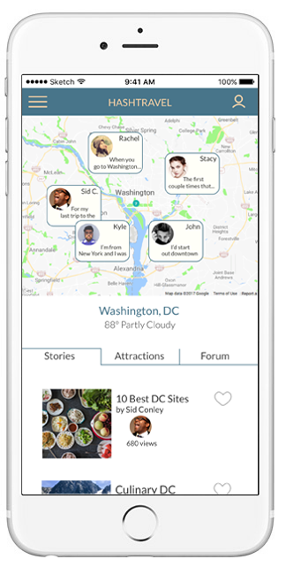

CHRIS EICHLERUX DESIGNER AND RESEARCHER
INFOSHOP
Web App Concept and Design • Timeframe: 2 weeks • Role: Co-Designer
There are about 100 million sites and apps that offer things to people for purchase. But there are very few that help a person know where their money goes when they make a purchase. What and who are they supporting? In an effort to increase consumer and citizen awareness of how buying power is used, I created the concept for Infoshop and create a full design of the application over the course of 2 weeks, working on a team of 3.

Partnering
The idea I had to empower consumers through an app was a big one. I don't think that our small team can do it all alone. Which is why we looked for an organization to partner with. We researched a number of NGO's that work on consumer protection and information, education, and advocacy about economics, monoplization, and other related issues. The idea was to offer this application to an NGO as a project.
We decided we'd love to work with Public Citizen, and organization founded in 1971 with a mission represent ordinary people in the halls of power. They've been a consistent voice of opposition again mega-corporations and monopoly. This project has nothing to do with Public Citizen at this point, as they have not agreed to work with us. But we used their name and logo in our test design.
Talking to People
Without speaking to potential users of Infoshop, we really couldn't know whether there was interest enough to build it. We might be unique in our interest in the topic. So we set out to interview people, beginning with a screener/research survey that netted 86 responses.

The charts show that the responses in the survey showed overwhelming interest in better tracking what one supports with his or her money.
Picking from the screener survey respondents as well as others, we did in-depth interviews with 7 people. These interviews were the heart of our research. We believe in letting people tell us about their experiences and not leading them or judging. It's important to ask about things that have happened in the past or regularly happen in someone's life, because there's often a gap between what we say we believe and how we behave.
On HashTravel's side what is wanted is a vibrant community of users that produces interesting content. But what do the users really want or need?
“I go grocery shopping at Stop & Shop and I feel guilty about it every time. They source food from giant factory farms."
"When I buy clothes and stuff I’m way more willing to spend more money to buy clothes that are not made by like 8 year olds in Indonesia"
"You have to know the parent company."
"I feel like community and neighborhood shops really contribute to the economy in a different kind of way."
Narrowing the Focus
We had a lot of great stories about peoples' habits and beliefs.


Interviews with insightful people guided us in our reimagining of HashTravel.
Analysis - Narrowing the Focus
Bringing together all of the information we gathered, we created a new structure for HashTravel. Our tools were whiteboards, notebooks, and many Sketch files. We were dealing with an app and a user flow of some complexity and we needed to make sure that our most important user experiences did not get lost in the structure. What was the most important experience? After talking to our users we decided it was sharing stories about travel with each other.
Design and Iterations
We worked in successive iterations which we tested with users, gradually refining. Each team member took responsibility for different parts of the user flows, and in the end we brought to gether all our files and refined them with one aesthetic.